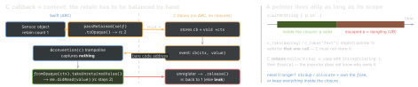

swift · folio
In one line: Swift reads C headers through its built-in Clang importer: a header
exposed as a module (module map; or a bridging header in an app target)
becomes global Swift functions and types — C scalars map to CInt/CChar…,
pointers to Unsafe*Pointer. C++ (Swift 5.9+, opt-in) imports copyable
classes as value types. The other way, @c (Swift 6.3; before it the
unofficial @_cdecl) exports a Swift function under a C symbol.
Download PDF Print view LaTeX source


Importing C
- App target: a bridging header
#imports the headers; visible target-wide, noimport. Unsupported in framework targets → module map / umbrella header. - SwiftPM: a C target’s
include/gets a generated module map, or writemodule CFoo { header "foo.h" export * }; thenimport CFoo. - Nullability:
_Nonnull→ non-optional,_Nullable→?, unannotated → IUO!(NS_ASSUME_NONNULL_BEGIN). - Not imported: function-like macros, variadic functions (call the
va_listtwin viawithVaList).
How C types map
| C | Swift |
|---|---|
int · long · char | Int32(CInt) · Int(CLong, LP64) · CChar |
const T * / T * | UnsafePointer<T> / UnsafeMutablePointer<T> |
const void * / void * | UnsafeRawPointer / UnsafeMutableRawPointer |
Foo *, Foo incomplete | OpaquePointer — pass back, never deref |
struct | struct: memberwise init + zero init() |
T a[4] (field) | tuple (T, T, T, T) |
plain enum | struct RawRepresentable + global constants |
NS_ENUM / CF_ENUM | Swift enum, non-frozen → @unknown default |
NS_CLOSED_ENUM | frozen enum (exhaustive switch) |
NS_OPTIONS | OptionSet |
#define N 42 | let N: Int32 (literals only) |
void (*)(int) | @convention(c) (Int32) -> Void |
Example — callback with context
// C: void sensor_start(void (*cb)(void *, int32_t), void *ctx);
final class Sensor {
private var ctx: UnsafeMutableRawPointer?
func start() {
let c = Unmanaged.passRetained(self).toOpaque() // +1
sensor_start({ ctx, v in // captures nothing
Unmanaged<Sensor>.fromOpaque(ctx!)
.takeUnretainedValue().didRead(v) }, c) // borrow
ctx = c }
func stop() {
sensor_stop() // C forgets cb first
if let c = ctx { Unmanaged<Sensor>.fromOpaque(c).release() } }
}Swift → C: @c (6.3) · @_cdecl
@c public func sum(_ a: Int32, _ b: Int32) -> Int32 emits the C symbol sum and a declaration in the generated header; @c(MyLib_sum) renames; @c @implementation implements a function a C header already declares. Before 6.3: @_cdecl("sum") — underscored, unofficial, hand-written prototype. Only C-representable types either way.
C++ interop (Swift 5.9 / Xcode 15+)
- Enable: SwiftPM
swiftSettings: [.interoperabilityMode(.Cxx)]; Xcode “C++ and Objective-C Interoperability” = C++/Objective-C++. Opt-in per module, and viral: a module whose interface exposes C++ needs importers to enable it too. - Copyable class/struct (copy ctor + dtor) → Swift value type: a Swift copy runs the copy ctor, end of lifetime runs the destructor.
constmethods → non-mutating; others →mutating. - Reference semantics: annotate from
<swift/bridging>—SWIFT_SHARED_REFERENCE(retain, release)→ a Swift class, ARC calls your retain/release;SWIFT_IMMORTAL_REFERENCE→ never freed. - std:
String(cxxStr)/std::string(swiftStr)(copies);std::vectoris aRandomAccessCollection(via atypealias);begin/endtypes iterate infor-in. - Limits: class templates only as a specialised
using/typedef; a C++ exception escaping into Swift terminates; Swift → C++ goes through the generated-Swift.hheader.
Traps
- A closure capturing
selfas a C function pointer does not compile — context goes throughvoid *+Unmanaged. passRetainedwith norelease()= leak;passUnretainedand the object dies while C holdsctx= use-after-free.- Returning the
withCString/withUnsafeBufferPointerpointer out of the closure. - C++ type owning a raw pointer with the default copy ctor → Swift copies it → double free. Fix the C++ (rule of 3/5) or make it a shared reference.
- A plain C
enumis a struct:switchneedsdefault.